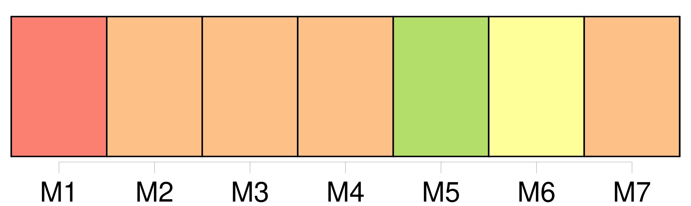

Longueur nb maillons : 14 mentions |
 |
On n’ imagine pas le parti qu’ on peut tirer d’ un simple morceau de bois, d’ [une branche cassée] , comme on [en] trouve le long des haies. ( Quand on n’ [en] trouve pas, on [en] casse. ) [C’] était [la baguette des fées] Longue et droite, [elle] devenait une lance, ou peut-être une épée ; il suffisait de [la] brandir pour faire surgir des armées. [1 phrases] Quand [la branche] était flexible, [elle] se transformait en fouet. [2 phrases]
Si [la baguette] était petite, Christophe se faisait chef d’ orchestre ; il était le chef, et il était l’ orchestre ; il dirigeait, et il chantait ; et ensuite, il saluait les buissons, dont le vent agitait les petites têtes vertes. [6 phrases] Alors il tapait du pied, il les menaçait de [son bâton] , et il leur ordonnait avec colère de s’ en aller à gauche : et en effet, cette fois, ils obéissaient parfaitement. [2 phrases] Il cherchait un grillon pour en faire un cheval : il lui mettait doucement [sa baguette] sur le dos, et disait une formule. [3 phrases] Il inventait d’ attacher une vieille ficelle à [son bâton magique] , et il la jetait gravement dans le fleuve, attendant que le poisson vînt mordre. |
|
Il est possible de télécharger la ressource sur la page Ortolang |
Si vous avez des questions ou vous voyez des erreurs, merci d'envoyer un mail à silvia.federzoni89@gmail.com |